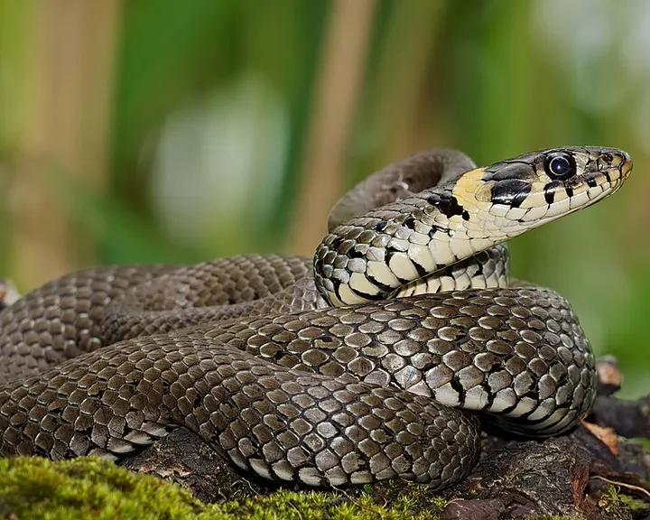
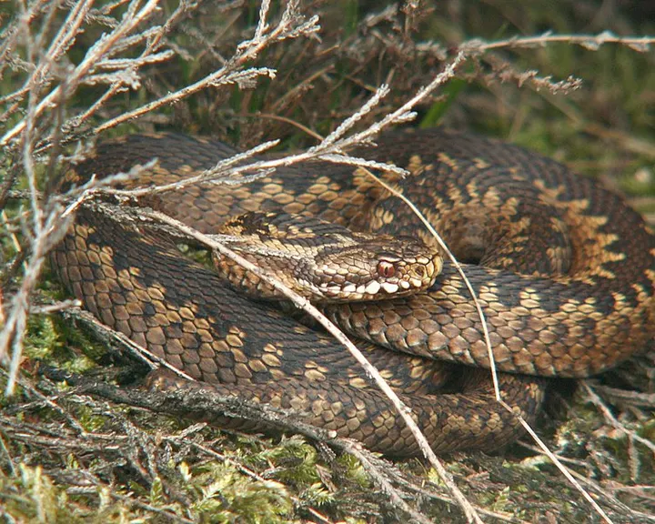

Ringelnatter oder Kreuzotter?
Gelbe Halbmonde am Hinterkopf zeigen die harmlose Ringelnatter. Die Kreuzotter hat ein Zickzackband.


Die Unterschiede
| Ringelnatter | Kreuzotter | |
|---|---|---|
| Kopf | gelbe Halbmonde am Hinterkopf | dunkles X- oder V-Zeichen |
| Pupille | rund | senkrecht, schlitzförmig |
| Rücken | grau bis oliv, kleine Flecken | Zickzackband |
| Länge | 70–120 cm, schlank | 50–70 cm, gedrungen |
| Lebensraum | meist am Wasser | Moore, Heiden, Waldränder |
Merkhilfe: Im Zweifel Abstand halten und mit dem Fernglas auf den Hinterkopf schauen.
Auf einen Blick erkennen
Die Ringelnatter trägt hinter dem Kopf zwei gelbliche Halbmondflecken, die schwarz eingefasst sind. Ihre Pupillen sind rund, der Körper ist schlank und oft um einen Meter lang, große Weibchen werden noch länger. Die Kreuzotter bleibt mit 50 bis 70 cm deutlich kürzer und wirkt gedrungen. Über ihren Rücken läuft ein dunkles Zickzackband, die Pupillen stehen senkrecht wie Schlitze.
Wo du welche Schlange triffst
Ringelnattern leben in fast ganz Deutschland, meist in der Nähe von Teichen, Gräben und Bächen. Sie schwimmen ausgezeichnet. Kreuzottern sind viel seltener. Ihre Schwerpunkte liegen in den Mooren und Heiden Norddeutschlands, in den östlichen Mittelgebirgen, im Schwarzwald, auf der Schwäbischen Alb, im Alpenvorland und in den Alpen. In den westlichen Mittelgebirgen wie Eifel, Hunsrück, Taunus und Odenwald fehlt die Kreuzotter.
Die Barrenringelnatter im Westen
Westlich des Rheins lebt vor allem die Barrenringelnatter, die erst seit 2017 als eigene Art gilt. Ihre Halbmonde sind blasser oder fehlen, dafür trägt sie an den Flanken dunkle Querbalken. Auch sie ist ungiftig.
Häufige Fragen
Ist die Ringelnatter giftig?
Nein. Die Ringelnatter ist für Menschen harmlos. Fühlt sie sich bedroht, flieht sie, zischt, spreizt den Nacken oder stellt sich tot.
Wie gefährlich ist der Biss einer Kreuzotter?
Für gesunde Erwachsene ist ein Biss meist nicht lebensgefährlich. Kinder, ältere Menschen und Menschen mit Vorerkrankungen können stärker reagieren. Typisch ist eine schmerzhafte Schwellung an der Bissstelle, seltener kommen Übelkeit, Schwindel oder Kreislaufprobleme dazu. Jeder Biss gehört ärztlich abgeklärt.
Was tun nach einem Kreuzotterbiss?
Ruhe bewahren, das gebissene Körperteil ruhigstellen, Ringe und Uhr abnehmen und ärztliche Hilfe holen. Bei Atemnot, Kreislaufproblemen oder Schwellungen im Hals sofort den Notruf 112 wählen. Die Wunde nicht abbinden, nicht aussaugen und nicht einschneiden.
Welche Schlange schwimmt im Gartenteich?
Sehr wahrscheinlich eine Ringelnatter. Sie lebt am Wasser und jagt dort Frösche, Molche und kleine Fische. Achte auf die hellen Halbmonde am Hinterkopf.
Ich habe eine schwarze Schlange gesehen. Welche war es?
Schwarze Tiere gibt es bei beiden Arten. Dann fehlen Zickzackband und oft auch die Halbmonde. Es helfen Körperbau und Pupille: lang und schlank mit runder Pupille spricht für die Ringelnatter, kurz und gedrungen mit Schlitzpupille für die Kreuzotter. Im Zweifel Abstand halten.
Sind Ringelnatter und Kreuzotter geschützt?
Ja, beide sind nach dem Bundesnaturschutzgesetz besonders geschützt. Sie dürfen nicht gefangen, verletzt oder getötet werden. Die Kreuzotter gilt in der Roten Liste Deutschlands als stark gefährdet, die Ringelnatter als gefährdet.
Wie verhalte ich mich, wenn ich einer Schlange begegne?
Ruhig stehen bleiben, Abstand halten und dem Tier den Rückzug lassen. Schlangen greifen nicht an, sie beißen nur, wenn sie sich bedrängt fühlen. In Kreuzottergebieten helfen festes Schuhwerk und lange Hosen, Hunde bleiben an der Leine.
Quellen
- DGHT: Merkblatt Schlangen in Deutschland (öffnet in neuem Fenster)
- Apotheken Umschau: Kreuzotterbiss (öffnet in neuem Fenster)
- NABU: Reptilien in Deutschland (öffnet in neuem Fenster)
Stand: